Phase 5 — Vertical SliceNEON BASTION / PHASE 5Go out. Recover. Come home.
Boot → Hideout → Mission → Deployment → Combat → Loot → Extraction → Debrief → Home.
33/33 regression · 2 × 64/64 graphical route · Save/load PASS · Cold import 0/0.
1280×720 automated input/API evidence, not manual acceptance. Existing character and gameplay rules preserved.
Implementation & limitationsOpening / 24s, skippable
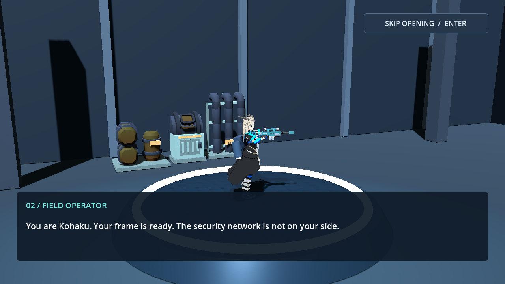
Main Menu
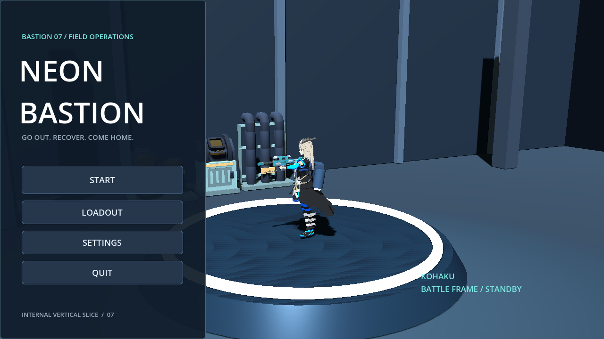
Hideout overview
Hanger / existing loadout
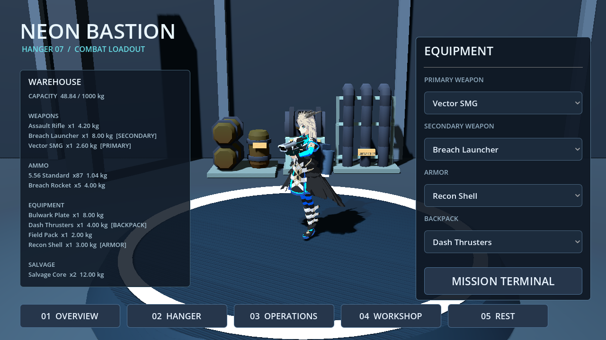
Workshop
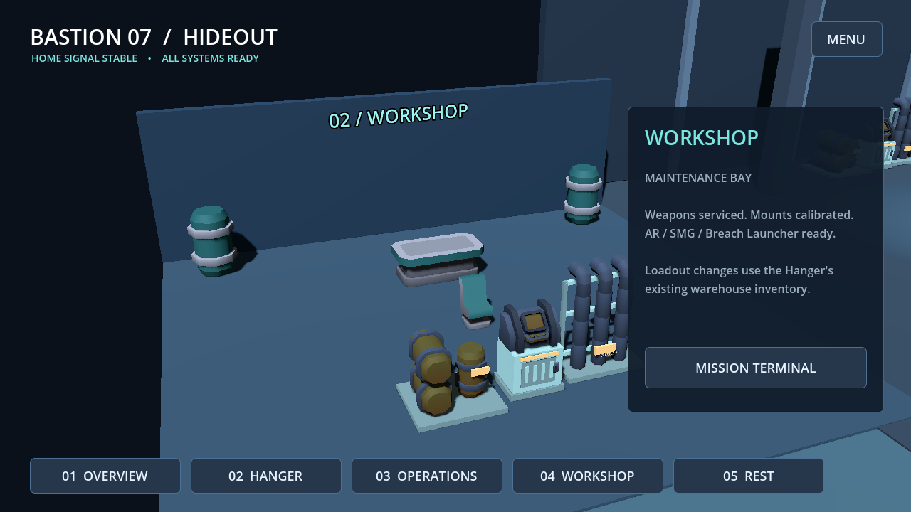
Personal quarters
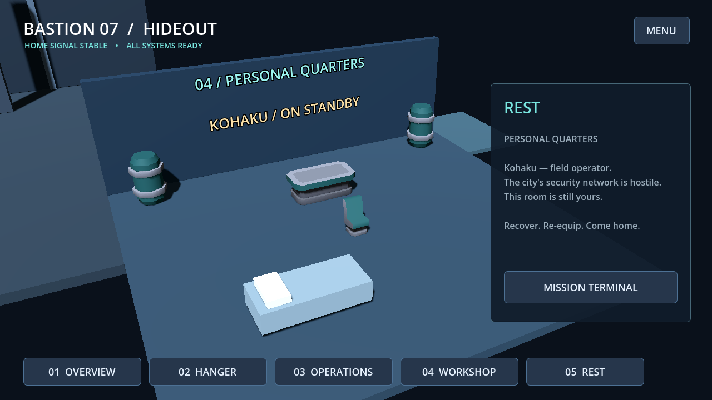
Operations / mission confirmation
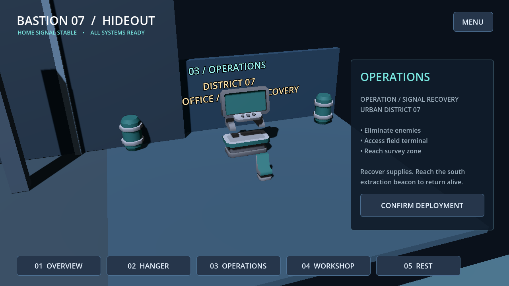
Deployment
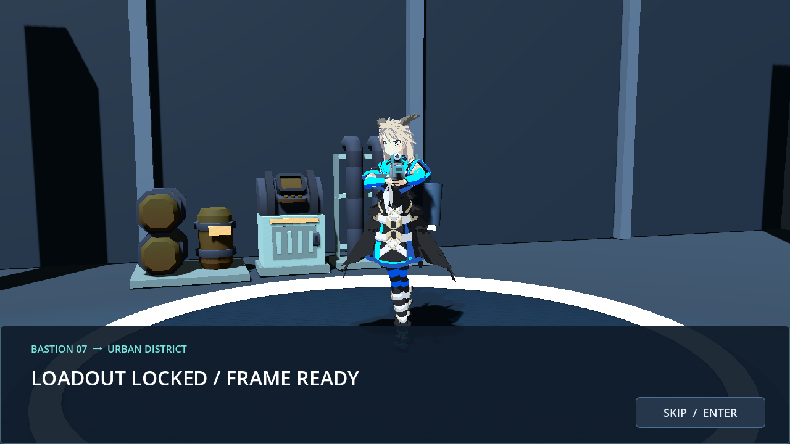
Arrival / production arena
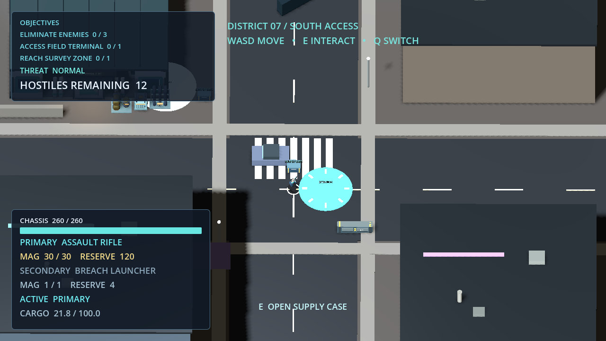
Loot contents
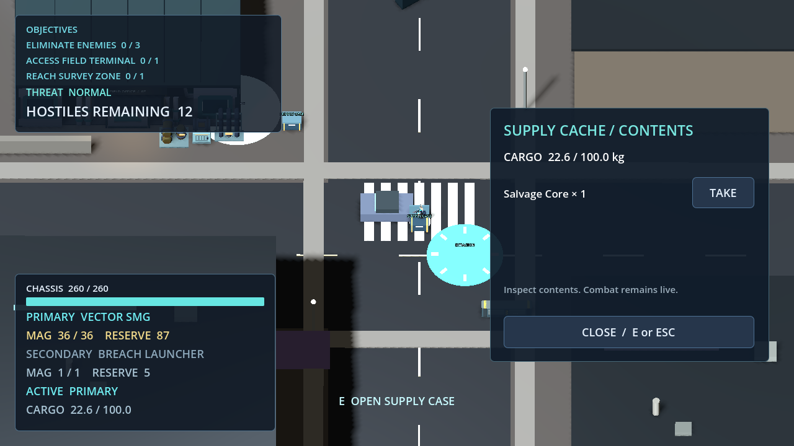
Pickup / cargo feedback
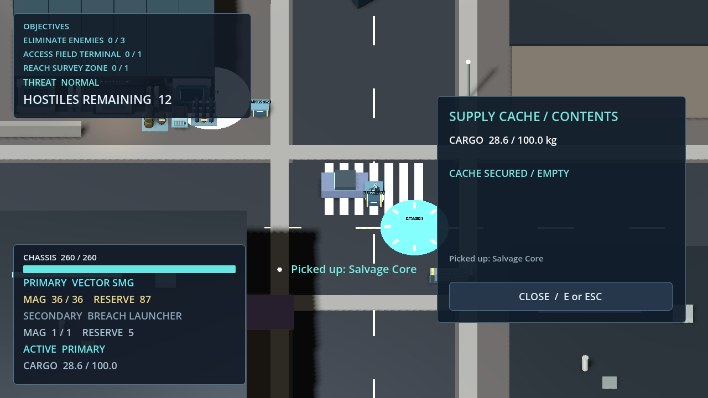
Field Office / Terminal
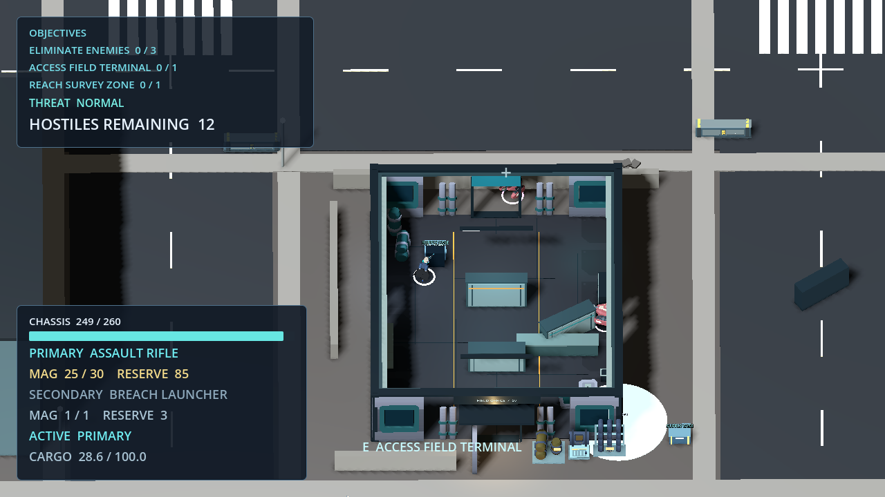
Combat / KITE-07
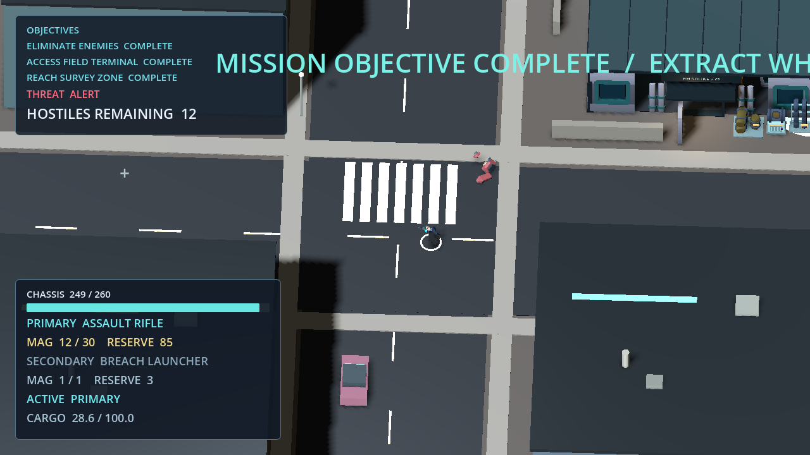
Extraction
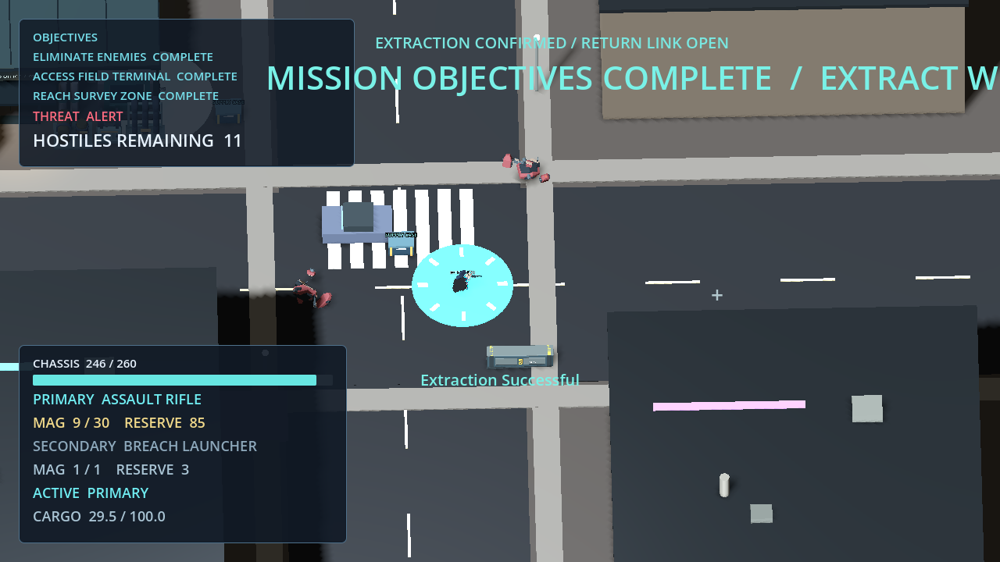
Mission debrief
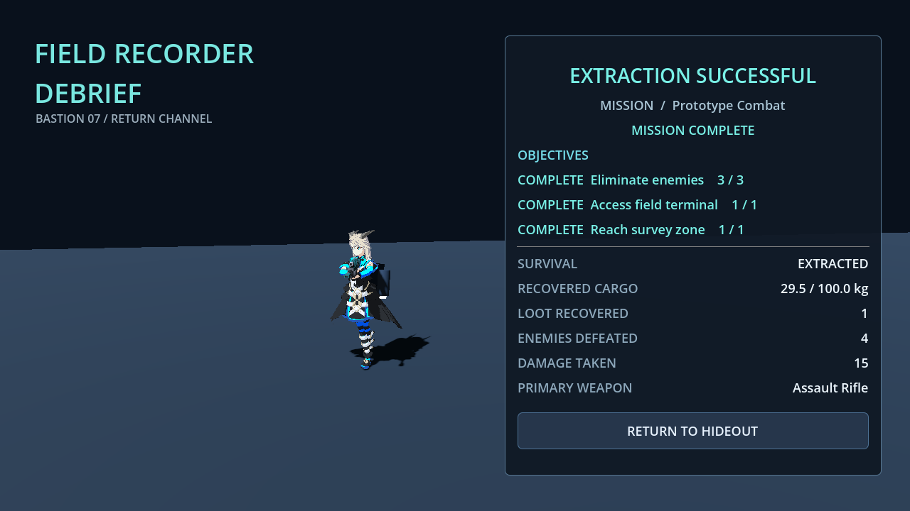
Return to Hideout
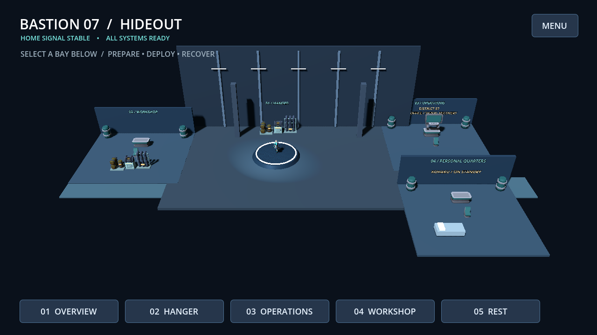
North extension / inspection camera
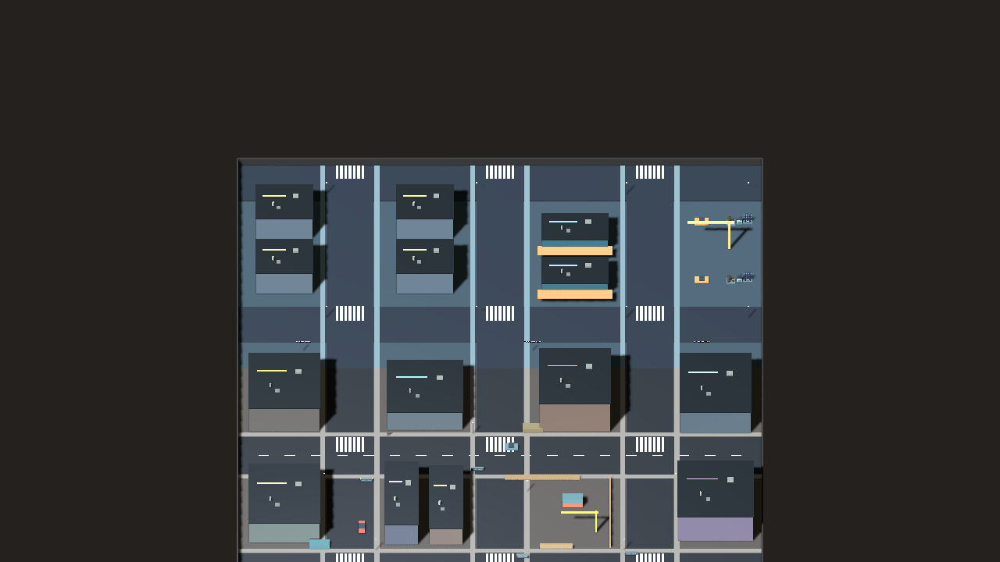